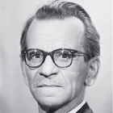

Женщины в ITПервый в континентальной Европе компьютер Мало кто знает, что именно в Киеве был создан первый в Советском Союзе и континентальной Европе компьютер с хранимой в памяти программой, который, по сути, является прадедушкой современных ПК. Ведь именно Малая Электронная Счетная Машина (МЭСМ), придуманная и разработанная с нуля академиком Лебедевым, заложила основы построения всех электронно-вычислительных машин (ЭВМ), которые без принципиальных изменений используются и в современной вычислительной технике. |
|
Появление в конце 40-х годов ХХ века компьютеров с хранимой в памяти программой было завершающим и едва ли не самым важным шагом в развитии цифровой вычислительной техники. |
Мало кто знает, что именно в Киеве был создан первый в Советском Союзе и континентальной Европе компьютер с хранимой в памяти программой, который, по сути, является прадедушкой современных ПК. Ведь именно Малая Электронная Счетная Машина (МЭСМ), придуманная и разработанная с нуля академиком Лебедевым, заложила основы построения всех электронно-вычислительных машин (ЭВМ), которые без принципиальных изменений используются и в современной вычислительной технике. Мало кто знает, что именно в Киеве был создан первый в Советском Союзе и континентальной Европе компьютер с хранимой в памяти программой, который, по сути, является прадедушкой современных ПК. Ведь именно Малая Электронная Счетная Машина (МЭСМ), придуманная и разработанная с нуля академиком Лебедевым, заложила основы построения всех электронно-вычислительных машин (ЭВМ), которые без принципиальных изменений используются и в современной вычислительной технике. |
Ученым, работавшим над МЭСМ, пришлось создавать свои рабочие места с нуля — и лабораторию, и металлообрабатывающую мастерскую, и даже электростанцию. Все работали посменно по 24 часа в сутки, при этом дисциплина была железная. |
|
|
 Лебедев1988 — 1934 Появление в конце 40-х годов ХХ века компьютеров с хранимой в памяти программой было завершающим и едва ли не самым важным шагом в развитии цифровой вычислительной техники. |
Мало кто знает, что именно в Киеве был создан первый в Советском Союзе и континентальной Европе компьютер с хранимой в памяти программой, который, по сути, является прадедушкой современных ПК. Ведь именно Малая Электронная Счетная Машина (МЭСМ), придуманная и разработанная с нуля академиком Лебедевым, заложила основы построения всех электронно-вычислительных машин (ЭВМ), которые без принципиальных изменений используются и в современной вычислительной технике. Мало кто знает, что именно в Киеве был создан первый в Советском Союзе и континентальной Европе компьютер с хранимой в памяти программой, который, по сути, является прадедушкой современных ПК. Ведь именно Малая Электронная Счетная Машина (МЭСМ), придуманная и разработанная с нуля академиком Лебедевым, заложила основы построения всех электронно-вычислительных машин (ЭВМ), которые без принципиальных изменений используются и в современной вычислительной технике. |